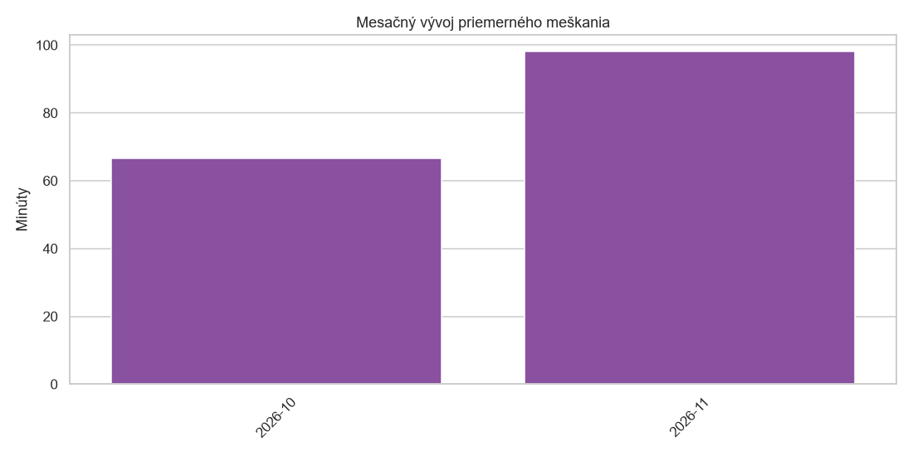
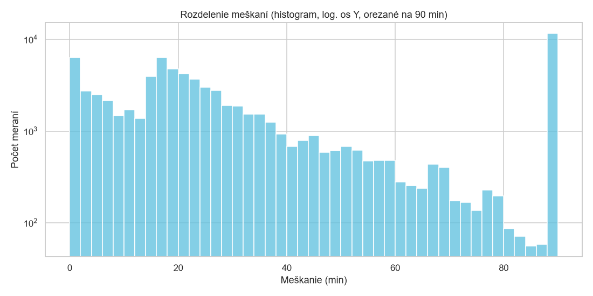
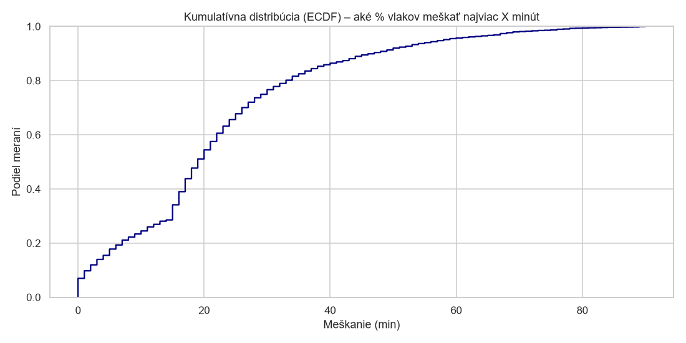
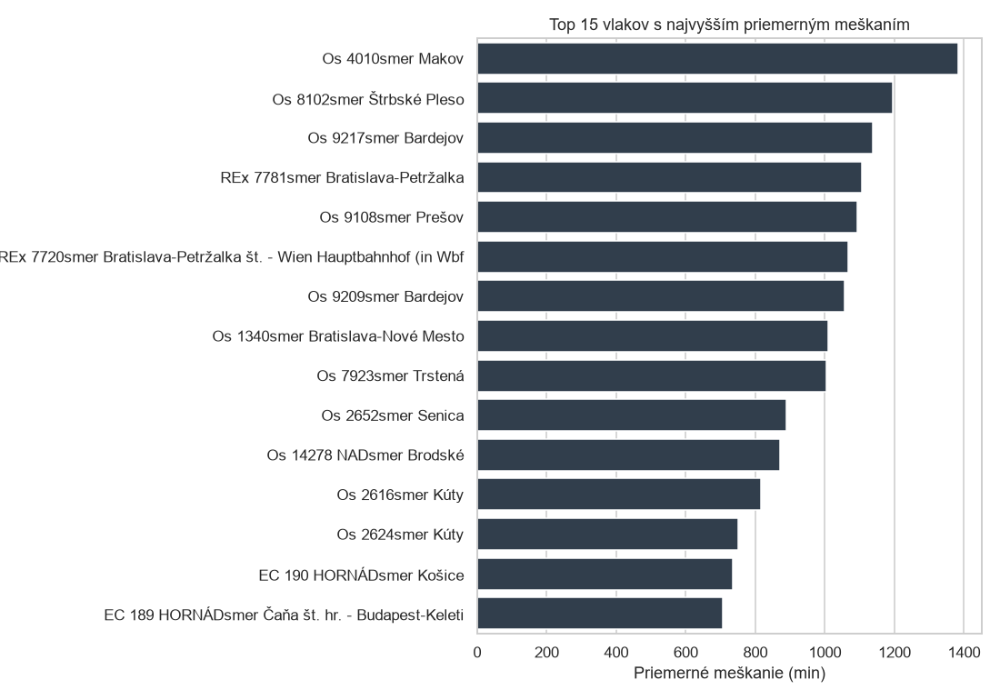

📈 Historický vývoj (denný, 7- a 30-dňový priemer, trend)

Obdobie dát: 23.10.2026 08:57 – 22.11.2026 04:47


| Zaznamov | Priemer | Median | P90 | Max | Std | Meskaju_pct | Nad5_pct | Nad15_pct | Nad60_pct | |
|---|---|---|---|---|---|---|---|---|---|---|
| Mesiac | ||||||||||
| 2026-10 | 17260 | 66.60 | 20.00 | 120.00 | 2176 | 193.21 | 96.23 | 85.27 | 67.36 | 13.24 |
| 2026-11 | 73073 | 99.71 | 23.00 | 148.00 | 2780 | 270.65 | 93.39 | 85.33 | 72.86 | 19.30 |


| Zaznamov | Priemer | Median | P90 | Max | Std | Meskaju_pct | Nad5_pct | Nad15_pct | Nad60_pct | |
|---|---|---|---|---|---|---|---|---|---|---|
| Den | ||||||||||
| Pondelok | 10649 | 73.47 | 21.00 | 128.00 | 1374 | 200.28 | 91.26 | 78.77 | 67.78 | 14.93 |
| Utorok | 16657 | 96.72 | 23.00 | 177.00 | 2085 | 241.88 | 95.16 | 86.56 | 75.22 | 17.29 |
| Streda | 13187 | 133.82 | 24.00 | 154.00 | 2779 | 362.61 | 93.82 | 85.02 | 71.92 | 26.08 |
| Štvrtok | 12450 | 78.32 | 24.00 | 132.00 | 1707 | 197.55 | 93.38 | 88.10 | 76.69 | 20.68 |
| Piatok | 15096 | 100.40 | 23.00 | 151.00 | 2780 | 284.28 | 97.09 | 89.69 | 74.83 | 16.81 |
| Sobota | 12230 | 83.33 | 20.00 | 133.00 | 2542 | 243.65 | 93.09 | 84.71 | 66.03 | 15.06 |
| Nedeľa | 10064 | 76.25 | 21.00 | 132.00 | 1491 | 202.26 | 91.88 | 81.33 | 66.69 | 15.12 |


| Zaznamov | Priemer | Median | P90 | Max | Std | Meskaju_pct | Nad5_pct | Nad15_pct | Nad60_pct | |
|---|---|---|---|---|---|---|---|---|---|---|
| Cast_dna | ||||||||||
| Noc (0–5) | 13667 | 203.19 | 22.00 | 1,087.00 | 2441 | 439.75 | 86.76 | 78.06 | 61.17 | 26.03 |
| Ranná špička (6–9) | 13642 | 56.05 | 21.00 | 76.00 | 2780 | 223.92 | 92.85 | 84.05 | 70.13 | 12.92 |
| Dopoludnie/popoludnie (10–15) | 26753 | 49.85 | 22.00 | 123.00 | 2542 | 131.99 | 95.41 | 86.47 | 73.90 | 14.69 |
| Popoludňajšia špička (16–19) | 18551 | 69.80 | 22.00 | 142.00 | 2096 | 165.17 | 95.70 | 86.09 | 74.63 | 17.25 |
| Večer (20–23) | 17720 | 127.83 | 25.00 | 484.00 | 2545 | 285.85 | 96.22 | 89.35 | 75.17 | 22.21 |




| Percentil | Minuty |
|---|---|
| P25 | 15.00 |
| P50 | 22.00 |
| P75 | 43.00 |
| P90 | 141.00 |
| P95 | 517.00 |
| P99 | 1,357.00 |
| P99.9 | 2,319.00 |
| Zaznamov | Podiel_% | |
|---|---|---|
| Kategoria | ||
| Včas (0) | 5479 | 6.07 |
| 1–5 min | 7782 | 8.61 |
| 6–15 min | 12208 | 13.51 |
| 16–30 min | 32998 | 36.53 |
| 31–60 min | 15481 | 17.14 |
| 60+ min | 16385 | 18.14 |


| Zaznamov | Priemer | Median | P90 | Max | Std | Meskaju_pct | Nad5_pct | Nad15_pct | Nad60_pct | |
|---|---|---|---|---|---|---|---|---|---|---|
| Stanica_Poloha | ||||||||||
| Barcapred 4 min. | 27 | 1,377.37 | 1,373.00 | 1,373.00 | 1491 | 22.71 | 100.00 | 100.00 | 100.00 | 100.00 |
| Barcapred 14 min. | 28 | 1,377.21 | 1,373.00 | 1,373.00 | 1491 | 22.30 | 100.00 | 100.00 | 100.00 | 100.00 |
| Barcapred 3 min. | 18 | 1,374.00 | 1,374.00 | 1,374.00 | 1374 | 0.00 | 100.00 | 100.00 | 100.00 | 100.00 |
| Barcapred 13 min. | 18 | 1,373.89 | 1,374.00 | 1,374.00 | 1374 | 0.47 | 100.00 | 100.00 | 100.00 | 100.00 |
| Bolerázteraz | 281 | 1,195.46 | 1,206.00 | 2,306.00 | 2776 | 806.84 | 100.00 | 100.00 | 99.29 | 89.32 |
| Štrbské Plesoteraz | 93 | 1,184.03 | 1,211.00 | 1,955.00 | 2172 | 577.94 | 100.00 | 100.00 | 100.00 | 100.00 |
| Kapušany pri Prešoveteraz | 333 | 1,099.62 | 1,102.00 | 1,966.00 | 2212 | 641.82 | 100.00 | 100.00 | 99.40 | 95.80 |
| Barcapred 6 min. | 5 | 1,062.80 | 1,097.00 | 1,371.60 | 1372 | 328.96 | 100.00 | 100.00 | 100.00 | 100.00 |
| Nižnáteraz | 105 | 1,012.72 | 990.00 | 1,892.60 | 2080 | 626.79 | 100.00 | 100.00 | 100.00 | 93.33 |
| Turzovkateraz | 203 | 980.91 | 747.00 | 2,335.00 | 2777 | 892.46 | 100.00 | 100.00 | 99.01 | 84.24 |
| Bratislava-Petržalkateraz | 392 | 897.40 | 622.00 | 2,185.50 | 2571 | 813.21 | 100.00 | 100.00 | 98.72 | 81.38 |
| Barcateraz | 4278 | 677.27 | 647.50 | 1,238.30 | 1485 | 409.65 | 100.00 | 100.00 | 99.74 | 91.61 |
| Kútyteraz | 473 | 569.54 | 257.00 | 1,689.20 | 2540 | 684.03 | 100.00 | 100.00 | 91.97 | 62.16 |
| Bratislava-Petržalkapred 12 min. | 5 | 533.00 | 17.00 | 1,562.20 | 2579 | 1,143.78 | 100.00 | 100.00 | 80.00 | 20.00 |
| Trnavateraz | 242 | 529.02 | 173.00 | 1,675.00 | 2163 | 639.02 | 100.00 | 100.00 | 96.69 | 62.40 |
| Trenčínteraz | 352 | 452.35 | 154.50 | 1,332.00 | 1953 | 534.10 | 100.00 | 100.00 | 99.43 | 64.49 |
| Dunajská Stredateraz | 61 | 419.34 | 390.00 | 870.00 | 990 | 322.38 | 100.00 | 100.00 | 98.36 | 75.41 |
| Podunajské Biskupiceteraz | 150 | 411.49 | 88.00 | 1,233.00 | 1562 | 493.85 | 100.00 | 100.00 | 99.33 | 50.00 |
| Bratislava-Petržalkapred 2 min. | 7 | 404.14 | 25.00 | 1,113.80 | 2579 | 960.00 | 100.00 | 100.00 | 85.71 | 28.57 |
| Košiceteraz | 950 | 348.43 | 127.00 | 1,092.20 | 1372 | 421.73 | 100.00 | 100.00 | 97.68 | 52.53 |
| Trenčínpred 10 min. | 7 | 306.71 | 31.00 | 805.80 | 1953 | 725.95 | 100.00 | 100.00 | 100.00 | 14.29 |
| Podunajské Biskupicepred 3 min. | 6 | 281.83 | 24.00 | 803.50 | 1569 | 630.63 | 100.00 | 100.00 | 100.00 | 16.67 |
| Nižná Myšľateraz | 59 | 241.95 | 142.00 | 565.20 | 851 | 235.60 | 100.00 | 100.00 | 100.00 | 69.49 |
| Skalica na Slovenskuteraz | 34 | 240.24 | 249.00 | 501.00 | 534 | 181.20 | 100.00 | 100.00 | 100.00 | 70.59 |
| Kútypred 11 min. | 12 | 236.83 | 42.00 | 390.20 | 1726 | 484.01 | 100.00 | 100.00 | 100.00 | 33.33 |
| Zaznamov | Priemer | Median | P90 | Max | Std | Meskaju_pct | Nad5_pct | Nad15_pct | Nad60_pct | |
|---|---|---|---|---|---|---|---|---|---|---|
| Stanica_Poloha | ||||||||||
| 0 | 1185 | 0.00 | 0.00 | 0.00 | 0 | 0.00 | 0.00 | 0.00 | 0.00 | 0.00 |
| 1 | 1566 | 5.33 | 1.00 | 14.00 | 100 | 7.30 | 55.81 | 38.95 | 7.47 | 0.13 |
| Výh. Ružín | 51 | 7.71 | 3.00 | 19.00 | 61 | 11.96 | 86.27 | 37.25 | 15.69 | 1.96 |
| Žilina | 65 | 7.98 | 1.00 | 25.20 | 61 | 12.86 | 50.77 | 33.85 | 21.54 | 1.54 |
| 6 | 745 | 8.28 | 4.00 | 14.00 | 85 | 12.79 | 100.00 | 27.38 | 9.53 | 1.61 |
| 4 | 1062 | 8.30 | 3.00 | 26.00 | 80 | 13.48 | 100.00 | 22.98 | 14.60 | 0.94 |
| 7 | 577 | 8.72 | 5.00 | 17.00 | 87 | 11.43 | 100.00 | 31.89 | 10.75 | 0.87 |
| 2 | 1382 | 9.03 | 1.00 | 28.00 | 66 | 11.20 | 99.93 | 37.92 | 27.79 | 0.07 |
| 3 | 1249 | 9.16 | 2.00 | 33.00 | 60 | 13.04 | 100.00 | 30.42 | 22.50 | 0.00 |
| 9 | 420 | 9.23 | 6.00 | 11.10 | 75 | 10.90 | 100.00 | 70.71 | 7.38 | 2.14 |
| 5 | 886 | 9.38 | 3.00 | 33.00 | 71 | 14.71 | 100.00 | 22.69 | 15.46 | 1.58 |
| 8 | 474 | 9.60 | 6.00 | 16.00 | 80 | 12.36 | 100.00 | 63.50 | 10.76 | 2.32 |
| 10 | 349 | 9.74 | 7.00 | 12.00 | 90 | 9.77 | 100.00 | 89.68 | 6.02 | 1.43 |
| Dubnica nad Váhom | 28 | 9.89 | 5.50 | 26.00 | 40 | 11.95 | 64.29 | 50.00 | 28.57 | 0.00 |
| Výh. Plevník-Drienové | 61 | 10.15 | 1.00 | 30.00 | 71 | 17.76 | 55.74 | 31.15 | 24.59 | 3.28 |

| Zaznamov | Priemer | Median | P90 | Max | Std | Meskaju_pct | Nad5_pct | Nad15_pct | Nad60_pct | |
|---|---|---|---|---|---|---|---|---|---|---|
| Vlak | ||||||||||
| Os 4010smer Makov | 141 | 1,382.47 | 1,367.00 | 2,527.00 | 2780 | 816.56 | 100.00 | 100.00 | 100.00 | 95.74 |
| Os 8102smer Štrbské Pleso | 94 | 1,194.59 | 1,216.00 | 1,964.70 | 2176 | 583.86 | 100.00 | 100.00 | 100.00 | 100.00 |
| REx 7781smer Bratislava-Petržalka | 134 | 1,186.72 | 1,221.00 | 2,303.00 | 2545 | 814.09 | 100.00 | 100.00 | 98.51 | 85.82 |
| Os 9217smer Bardejov | 113 | 1,136.29 | 1,122.00 | 2,050.00 | 2217 | 654.63 | 100.00 | 100.00 | 100.00 | 96.46 |
| Os 9108smer Prešov | 106 | 1,091.77 | 1,102.00 | 1,942.00 | 2162 | 615.23 | 100.00 | 100.00 | 100.00 | 97.17 |
| REx 7720smer Bratislava-Petržalka št. - Wien Hauptbahnhof (in Wbf | 176 | 1,066.15 | 876.00 | 2,296.00 | 2579 | 805.62 | 100.00 | 100.00 | 100.00 | 93.18 |
| Os 9209smer Bardejov | 123 | 1,056.17 | 1,012.00 | 2,028.00 | 2217 | 682.98 | 100.00 | 100.00 | 99.19 | 97.56 |
| Os 7923smer Trstená | 108 | 1,004.12 | 985.00 | 1,923.70 | 2085 | 641.28 | 100.00 | 100.00 | 98.15 | 91.67 |
| Os 2652smer Senica | 213 | 910.48 | 636.00 | 2,324.00 | 2779 | 918.44 | 100.00 | 100.00 | 93.90 | 63.85 |
| Os 14278 NADsmer Brodské | 89 | 881.48 | 877.00 | 1,588.00 | 1726 | 515.82 | 100.00 | 100.00 | 100.00 | 94.38 |
| Os 2616smer Kúty | 194 | 856.48 | 625.00 | 2,177.00 | 2542 | 848.39 | 100.00 | 100.00 | 97.94 | 63.92 |
| Os 2624smer Kúty | 193 | 780.33 | 506.00 | 2,064.00 | 2428 | 805.80 | 100.00 | 100.00 | 100.00 | 60.62 |
| Os 5315smer Trenčín | 207 | 722.67 | 643.00 | 1,577.00 | 1953 | 573.33 | 100.00 | 100.00 | 97.58 | 82.13 |
| EC 189 HORNÁDsmer Čaňa št. hr. - Budapest-Keleti | 1629 | 702.83 | 727.00 | 1,257.00 | 1378 | 413.76 | 100.00 | 100.00 | 99.94 | 92.82 |
| EC 191 HORNÁDsmer Čaňa št. hr. - Budapest-Keleti | 1608 | 701.76 | 727.00 | 1,257.00 | 1378 | 412.76 | 100.00 | 100.00 | 100.00 | 92.97 |
| EC 193 HORNÁDsmer Čaňa št. hr. - Budapest-Keleti | 1569 | 698.86 | 657.00 | 1,257.00 | 1491 | 417.25 | 100.00 | 100.00 | 99.94 | 92.86 |
| Os 2627smer Trnava | 194 | 608.46 | 208.00 | 1,782.00 | 2167 | 703.50 | 100.00 | 100.00 | 94.85 | 53.09 |
| Os 4348smer Bratislava hlavná stanica | 119 | 545.71 | 392.00 | 1,344.00 | 1569 | 516.03 | 100.00 | 100.00 | 100.00 | 68.91 |
| Os 4370smer Dunajská Streda | 50 | 505.00 | 505.00 | 881.00 | 990 | 292.76 | 100.00 | 100.00 | 100.00 | 92.00 |
| Ex 13001smer Kúty št. hr. - Praha-Holešovice | 23 | 486.61 | 497.00 | 501.80 | 507 | 29.35 | 100.00 | 100.00 | 100.00 | 100.00 |
| Zaznamov | Priemer | Median | P90 | Max | Std | Meskaju_pct | Nad5_pct | Nad15_pct | Nad60_pct | |
|---|---|---|---|---|---|---|---|---|---|---|
| Vlak | ||||||||||
| mešká 30-59 minút | 3407 | 3.73 | 2.00 | 9.00 | 53 | 4.84 | 78.05 | 19.43 | 3.35 | 0.00 |
| mešká 60 a viac minút | 3407 | 8.17 | 3.00 | 28.00 | 100 | 14.73 | 78.05 | 27.38 | 14.21 | 1.67 |
| Ex 618 TATRAN | 3418 | 14.30 | 6.00 | 36.00 | 79 | 18.28 | 79.20 | 50.91 | 30.43 | 4.13 |
| Ex 620 TATRAN | 3418 | 15.57 | 7.00 | 30.00 | 141 | 28.12 | 71.27 | 58.07 | 22.38 | 7.37 |
| Ex 610 TATRAN | 3418 | 17.06 | 10.00 | 38.00 | 85 | 20.18 | 77.88 | 61.29 | 41.11 | 8.07 |
| Ex 614 TATRAN | 3418 | 14.62 | 10.00 | 38.00 | 86 | 18.58 | 72.03 | 61.41 | 30.49 | 4.45 |
| mešká 15-29 minút | 3407 | 8.55 | 8.00 | 14.00 | 66 | 6.68 | 95.25 | 67.42 | 8.66 | 0.03 |
| Ex 621 TATRAN | 3418 | 21.16 | 16.00 | 50.00 | 83 | 19.32 | 94.27 | 74.58 | 53.51 | 7.84 |
| mešká 5-14 minút | 3407 | 18.07 | 19.00 | 27.00 | 57 | 7.48 | 96.39 | 93.89 | 66.63 | 0.00 |
| mešká do 5 minút | 3407 | 59.27 | 63.00 | 79.00 | 93 | 19.66 | 97.15 | 97.01 | 93.60 | 58.70 |
| Os 14280 NADsmer Brodské | 9 | 15.00 | 15.00 | 15.00 | 15 | 0.00 | 100.00 | 100.00 | 0.00 | 0.00 |
| Os 2706smer Vrbovce št. hr. - Velká nad Veličkou | 6 | 15.00 | 15.00 | 15.00 | 15 | 0.00 | 100.00 | 100.00 | 0.00 | 0.00 |
| Os 2722smer Vrbovce št. hr. - Velká nad Veličkou | 22 | 15.00 | 15.00 | 15.00 | 15 | 0.00 | 100.00 | 100.00 | 0.00 | 0.00 |
| Os 3926smer Skalité | 5 | 15.00 | 15.00 | 15.00 | 15 | 0.00 | 100.00 | 100.00 | 0.00 | 0.00 |
| Os 4827smer Komárno | 5 | 15.00 | 15.00 | 15.00 | 15 | 0.00 | 100.00 | 100.00 | 0.00 | 0.00 |

| Zaznamov | Priemer | Median | P90 | Max | Std | Meskaju_pct | Nad5_pct | Nad15_pct | Nad60_pct | |
|---|---|---|---|---|---|---|---|---|---|---|
| Typ_vlaku | ||||||||||
| EC | 6776 | 516.46 | 407.00 | 1,227.00 | 1491 | 459.71 | 100.00 | 100.00 | 98.23 | 70.10 |
| REX | 3927 | 133.59 | 26.00 | 251.40 | 2579 | 374.06 | 100.00 | 100.00 | 92.64 | 18.95 |
| OS | 22183 | 114.78 | 23.00 | 153.00 | 2780 | 331.88 | 100.00 | 100.00 | 90.82 | 15.49 |
| EN | 836 | 70.48 | 25.00 | 261.00 | 486 | 99.02 | 100.00 | 100.00 | 93.06 | 21.29 |
| RJ | 2535 | 60.21 | 30.00 | 138.00 | 1253 | 105.80 | 100.00 | 100.00 | 94.95 | 16.80 |
| R | 7447 | 51.39 | 27.00 | 133.00 | 873 | 66.87 | 100.00 | 100.00 | 94.09 | 15.54 |
| RA | 1843 | 48.31 | 28.00 | 132.00 | 259 | 52.59 | 100.00 | 100.00 | 93.27 | 14.70 |
| SC | 575 | 45.77 | 24.00 | 125.00 | 257 | 55.27 | 100.00 | 100.00 | 93.04 | 14.09 |
| EX | 26894 | 30.31 | 18.00 | 76.00 | 606 | 43.10 | 86.61 | 75.38 | 57.09 | 12.21 |
| ZR | 282 | 25.01 | 23.00 | 36.00 | 54 | 8.39 | 100.00 | 100.00 | 96.81 | 0.00 |
| MEŠKÁ | 17035 | 19.56 | 9.00 | 63.00 | 100 | 23.70 | 88.98 | 61.03 | 37.29 | 12.08 |
| Timestamp | Vlak | Stanica_Poloha | Meskanie_Text | Meskanie_Minuty |
|---|---|---|---|---|
| 2026-11-20 08:58 | Os 4010smer Makov | Turzovkapred 7 min. | + 1400 minút= 23 hod, 20 min. | 2780 |
| 2026-11-18 09:17 | Os 2652smer Senica | Bolerázpred 7 min. | + 1399 minút= 23 hod, 19 min. | 2779 |
| 2026-11-20 08:48 | Os 4010smer Makov | Turzovkateraz | + 1397 minút= 23 hod, 17 min. | 2777 |
| 2026-11-18 09:07 | Os 2652smer Senica | Bolerázteraz | + 1396 minút= 23 hod, 16 min. | 2776 |
| 2026-11-20 08:37 | Os 4010smer Makov | Turzovkateraz | + 1387 minút= 23 hod, 7 min. | 2767 |
| 2026-11-18 08:58 | Os 2652smer Senica | Bolerázteraz | + 1386 minút= 23 hod, 6 min. | 2766 |
| 2026-11-20 08:28 | Os 4010smer Makov | Turzovkateraz | + 1377 minút= 22 hod, 57 min. | 2697 |
| 2026-11-18 08:47 | Os 2652smer Senica | Bolerázteraz | + 1376 minút= 22 hod, 56 min. | 2696 |
| 2026-11-20 08:18 | Os 4010smer Makov | Turzovkateraz | + 1367 minút= 22 hod, 47 min. | 2687 |
| 2026-11-18 08:37 | Os 2652smer Senica | Bolerázteraz | + 1366 minút= 22 hod, 46 min. | 2686 |
| 2026-11-20 08:07 | Os 4010smer Makov | Turzovkateraz | + 1357 minút= 22 hod, 37 min. | 2677 |
| 2026-11-18 08:27 | Os 2652smer Senica | Bolerázteraz | + 1356 minút= 22 hod, 36 min. | 2676 |
| 2026-11-20 07:57 | Os 4010smer Makov | Turzovkateraz | + 1347 minút= 22 hod, 27 min. | 2667 |
| 2026-11-20 07:48 | Os 4010smer Makov | Turzovkateraz | + 1337 minút= 22 hod, 17 min. | 2657 |
| 2026-11-18 08:07 | Os 2652smer Senica | Bolerázteraz | + 1336 minút= 22 hod, 16 min. | 2656 |


statistiky/ (CSV)